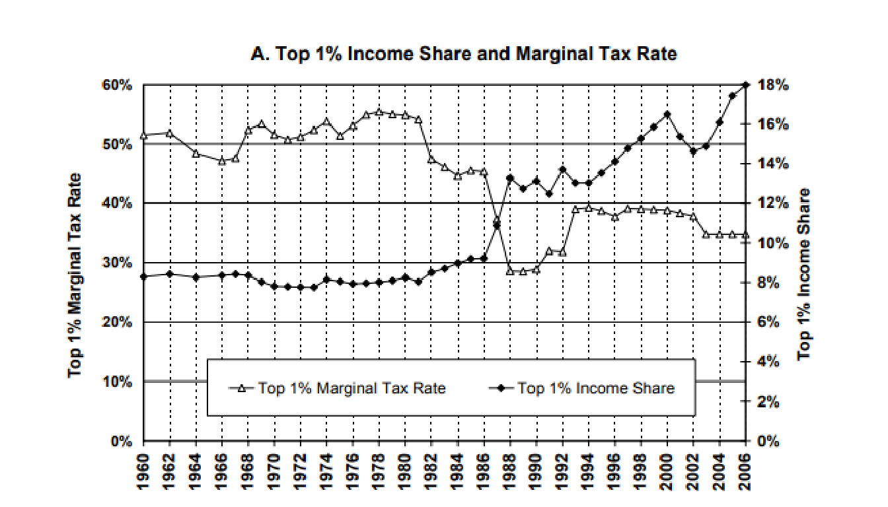
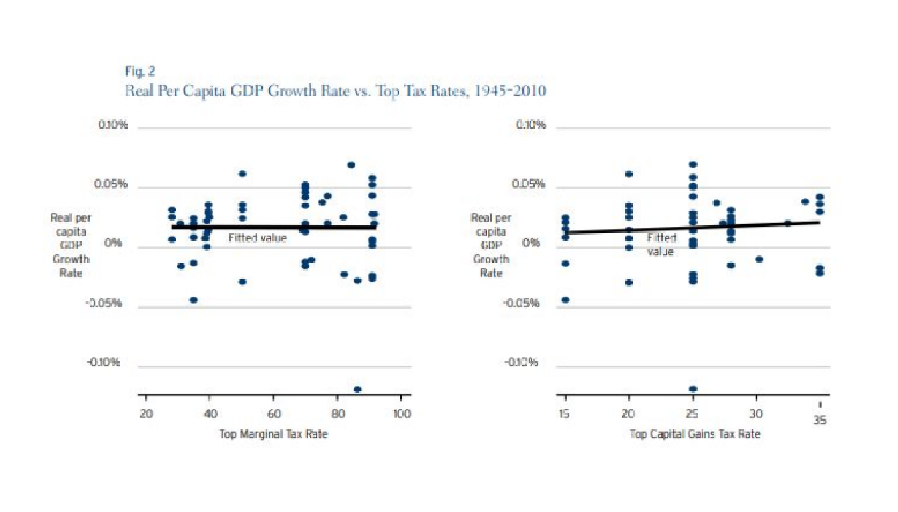
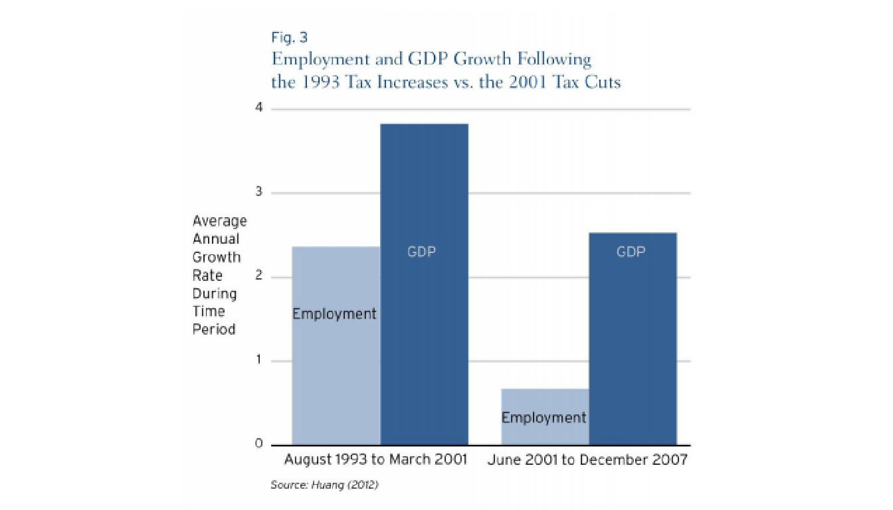
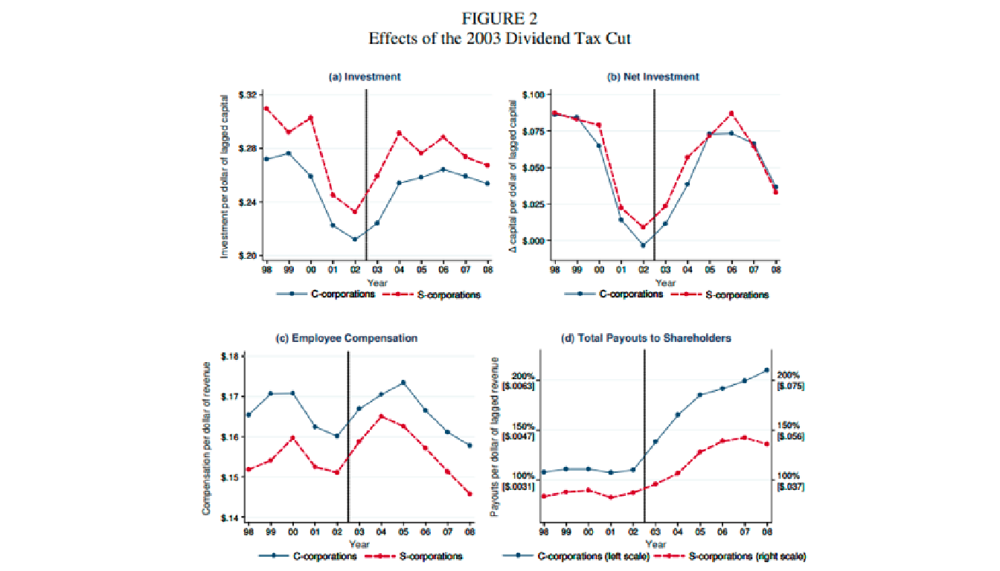
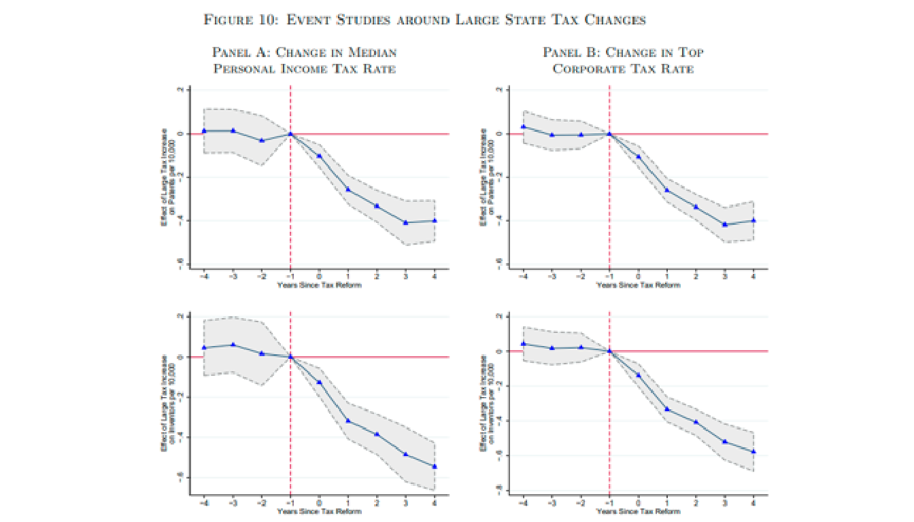
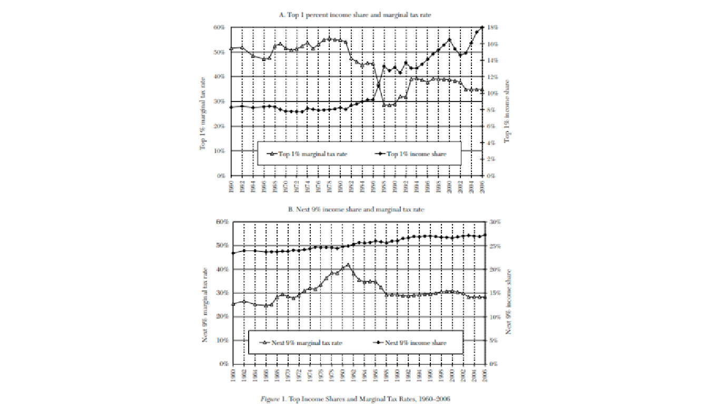
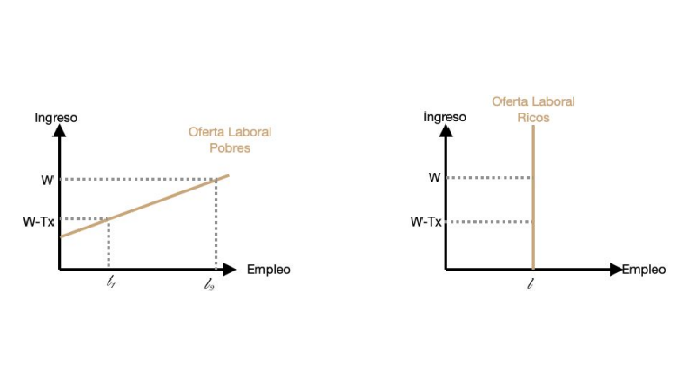

La gráfica compara la participación del consumo del gobierno en el PIB con el nivel logarítmico del PIB per cápita en seis países. El eje horizontal no es una tasa impositiva.
Las asociaciones descriptivas de esta gráfica no identifican efectos causales.
La gráfica compara la participación del consumo del gobierno en el PIB con el crecimiento anual medio del PIB per cápita en ventanas de 10 años, para seis países.
El archivo de dispersión no conserva el año de cada punto; no se atribuye una fecha a las observaciones ni un efecto causal a la participación del gobierno.
Saez, Slemrod y Giertz (2009) analizan la tendencia de los impuestos marginales al top 1% de Estados Unidos.
La gráfica muestra que esta se ha reducido desde la década de 1980 mientras que la proporción de personas en el 1% ha aumentado.

El mismo análisis se ve en los datos de impuestos de la Reserva Federal de Estados Unidos.
El patrón es que esta tasa marginal máxima disminuye con el tiempo, con algunas oscilaciones, tomando como máximo el 90% en la década de 1950 y el mínimo de 30% en 1990.
Gale y Samwick analizan el efecto de dos tipos de cambios en los impuestos al ingreso: cambios a las tasas, y reformas que aumentan la base tributaria y reducen las tasas de impuestos.
La evidencia histórica de Estados Unidos muestra grandes cambios en los impuestos con prácticamente ningún cambio observable en las tasas de crecimiento.



Ufuk, Akcigit, Grigsby, Nicholas y Stantcheva examinaron el efecto de los impuestos corporativos y personales sobre la innovación en Estados Unidos. Descubrieron que existen efectos significativos de las tasas impositivas (cambios en el top 10) sobre la ubicación y la cantidad de actividad innovadora, medida por patentes, en todos los Estados.
Las corporaciones, en particular, parecen mover su actividad innovadora de un estado a otro en respuesta a las tasas impositivas. Los efectos son más débiles cuando hay efectos de aglomeración en la innovación

Otra afectación puede ser vía el mercado laboral: esperaríamos que a medida que las tasas del impuesto sobre la renta de las personas físicas disminuyan, los trabajadores estarán más dispuestos a proporcionar trabajo.
Al aplicar el recorte impositivo, el top 1% aumenta sus porcentajes de ingreso. Sin embargo, el top 9% siguiente no modifica sus porcentajes de ingreso ni en los aumentos ni en los recortes impositivos.

La oferta laboral de los hogares de altos ingresos no se ve modificada por las tasas impositivas, mientras que si afecta la de los hogares de mediano y bajo ingreso.
Los ricos ahorrarían el recorte de impuestos, mientras que los siguientes estratos lo gastan.
